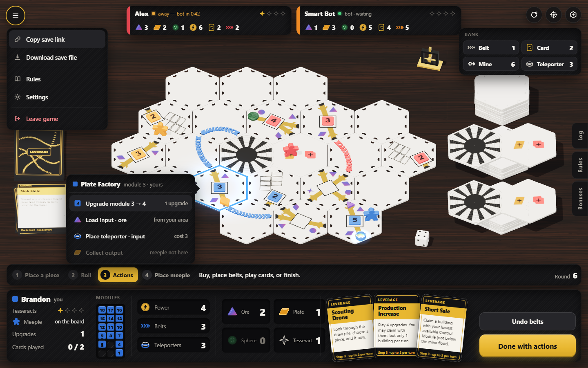
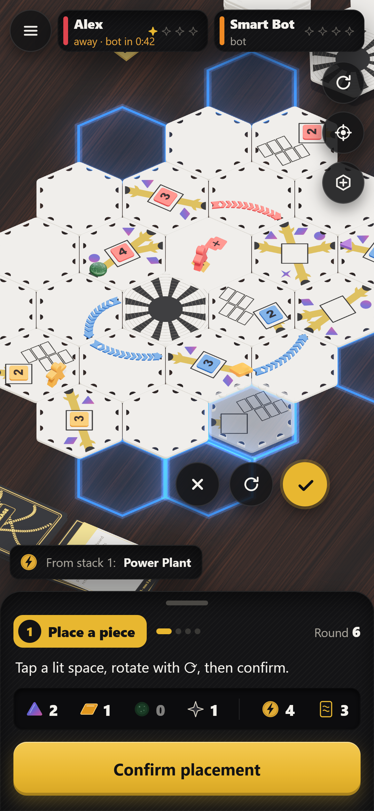
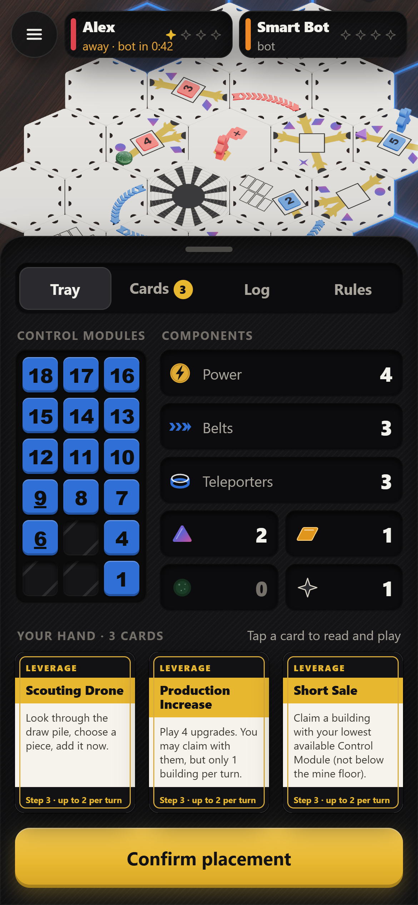
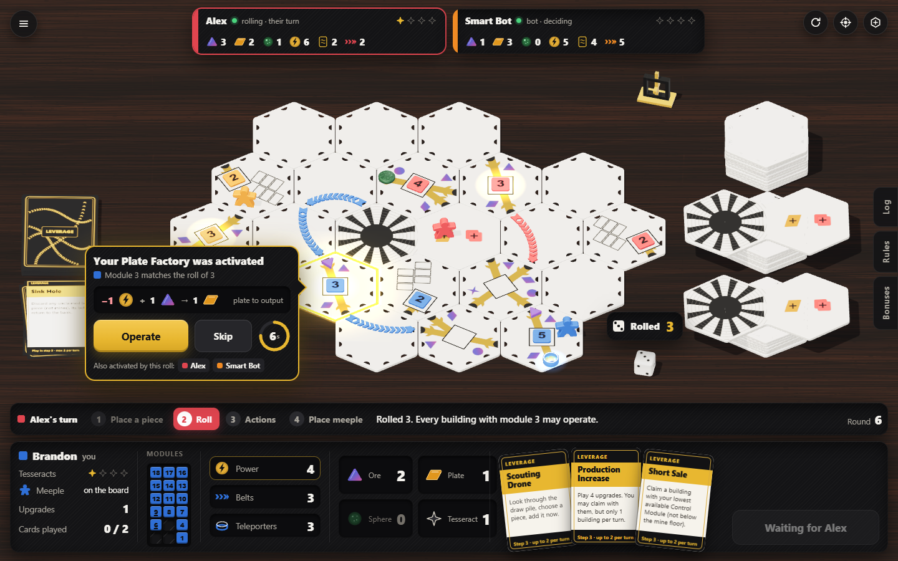
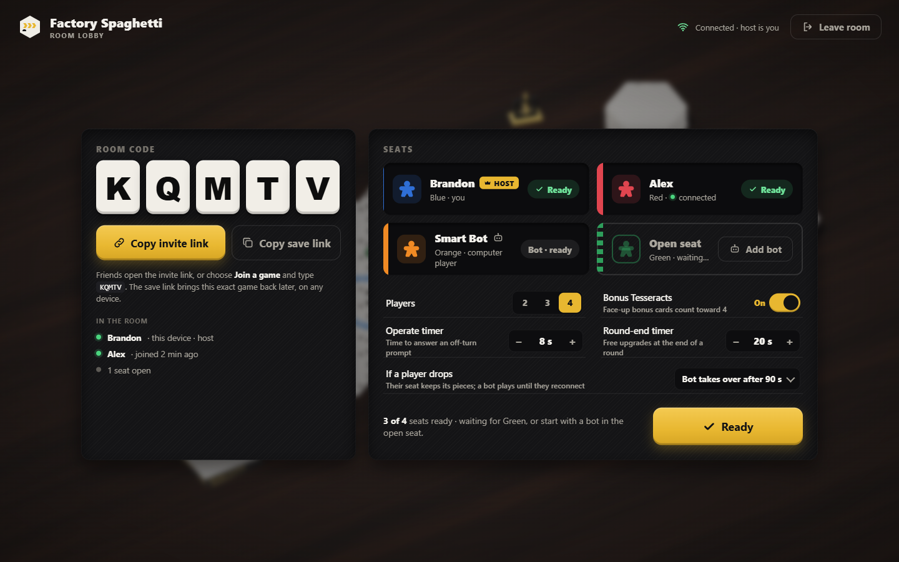
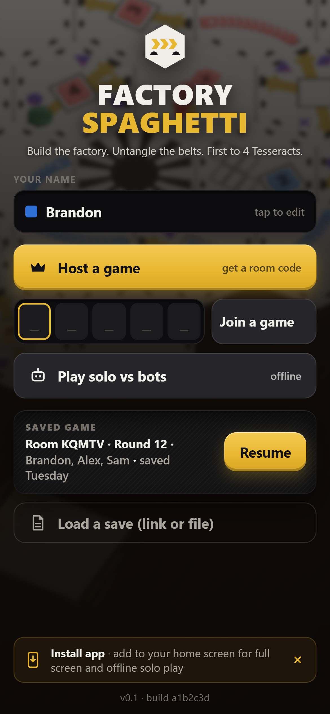

Static pictures of the planned isometric 3D table and the interface over it, for the designer to react to. Not a working game: the scene is hand-authored, nothing is clickable, no rules run. Every page opens directly in a browser (Three.js 0.160 from a CDN, no build step). Design reference: docs/PLAN.md §5.

Step 3 Actions. Building menu open on Blue's Plate Factory (module 3). Game menu open with save options. Seat plates, bank, turn bar, your tray and hand.

Step 1. Ghost Power Plant on a lit empty space with confirm, cancel and rotate. Other legal spaces glow. Bottom sheet collapsed.

The bottom sheet dragged up: Control Module tray (2, 3, 5 on buildings), components, materials and the hand of three cards.

Alex rolled a 3 (one die, one mine in play). Every module 3 flashes; your Plate Factory asks Operate or Skip with a 6-second countdown ring.

Room KQMTV, invite and save links, four seats (host, player, bot, open), room settings and Ready.

Name, Host, Join with a 5-letter code, Solo vs bots, the saved game with Resume, Load a save, Install app hint, version.
Files: table.js builds the 3D table (export mountTable(canvas, options)); ui.css, desktop.css and phone.css style the interface; ui.js draws the material icons and pins HTML to points on the table. Pieces are modelled procedurally from the print-file sizes; no photos or print files are copied here.